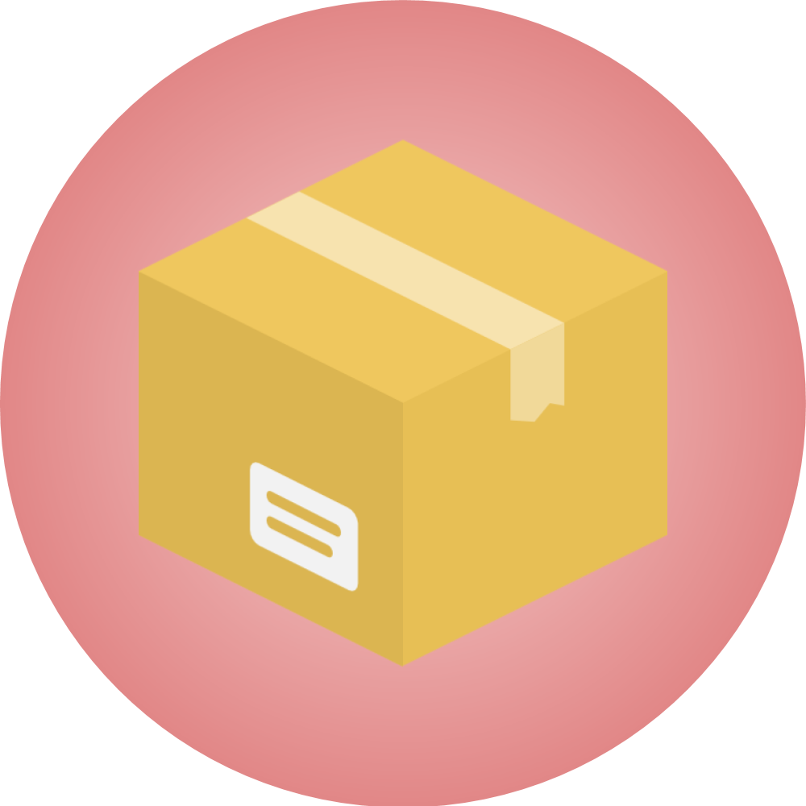

docker networking deepdive
Created by Oded Priva
let't build the lab
hands on
let's write a letter

The Open Systems Interconnection ( OSI )


Defines a networking framework to implement protocols in seven layers.
Layers 1-4: considered the lower layers, and mostly concern themselves with moving data around.
Layers 5-7: the upper layers, contain application-level data.
The TCP/IP Model


The TCP/IP protocol suite maps to a four-layer conceptual model known as the DARPA model, which was named after the U.S. government agency that initially developed TCP/IP
routing
Routing involves the process of selecting a path for traffic in a network, or between or across multiple networks.
How network routing works ?
let's send our letter

let's send another one
routing
iptables

what if the recipient does not want to get the letter?
Administration tool for IPv4 packet filtering and NAT